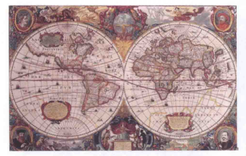
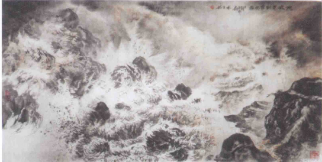
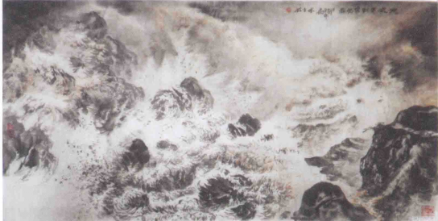
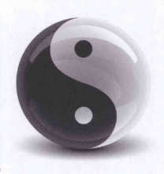
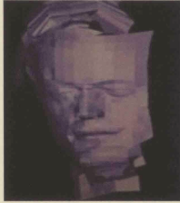
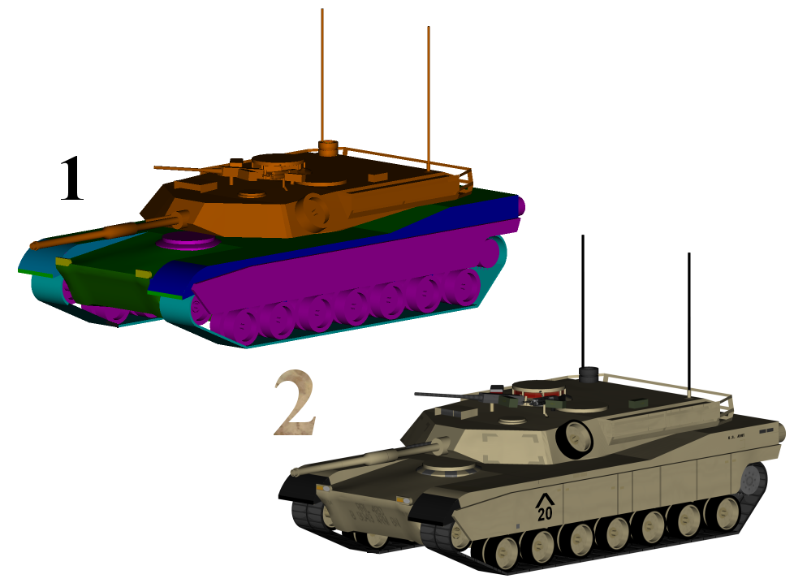
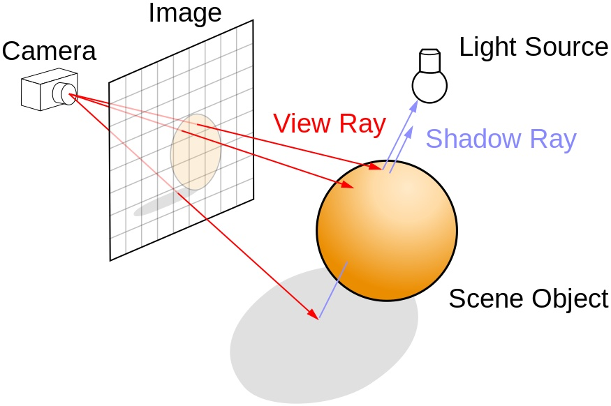
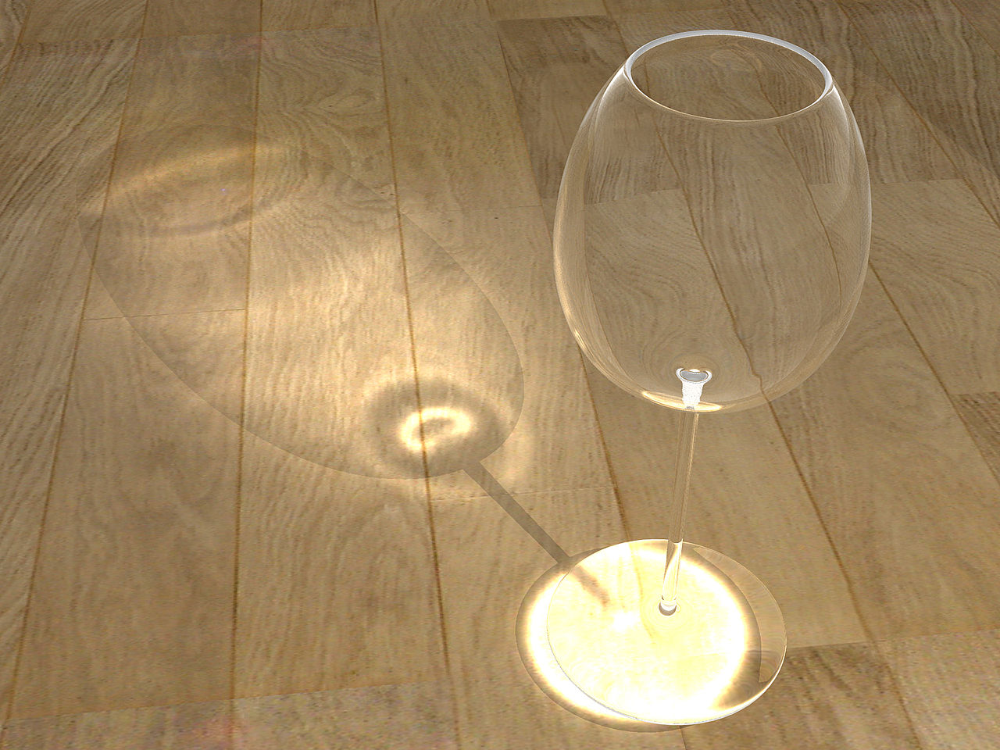

DEVELOPMENT
STEP BY STEP TO THE TOP

古代地图

国画山水用墨渲染意境


中国八卦
在漫长的历史长河中，我们想到很多绘画方法和文学表达方式，来渲染我们的想法。


2 = 加了纹理贴图的3D模型



1980年，光线跟踪算法出现了。光线追踪（Ray tracing）是三维计算机图形学中的特殊渲染算法，这种方法相对于之前的算法有更好的光学效果，并且效率非常高，所以当追求高质量的效果时经常使用这种方法。
1986年，渲染方程被提出。渲染方程（Rendering equation）描述的是光能在场景中的流动。根据光学的物理学原理，它在理论上给出了一个完美的结果，而各种各样的渲染技术，只是这个理想结果的一个近似。
1995年，出现了光子映射算法。该方法被用来做光和物体间的真实感模拟，特别值得一提的是，该方法在能够模拟一些特殊的效果，比如处理透明介质的折射，间接漫反射，透明材质的次表面反射和某些烟及水蒸汽效果等等。
这一技术叫实时光线追踪（它原本是一个悖论）。它的实现方法是使用最新的GPU和机器学习方法组合了大量计算能力，并在不需要光线追踪的情况下结合使用光栅技术。这种软硬件组合时至今日才能实现，是多家公司共同辛勤努力的结果。
 温柔朴实善良的西南人民
温柔朴实善良的西南人民 Vue.js
Vue.js